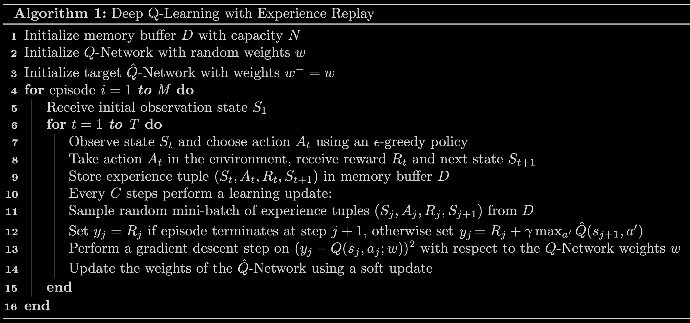
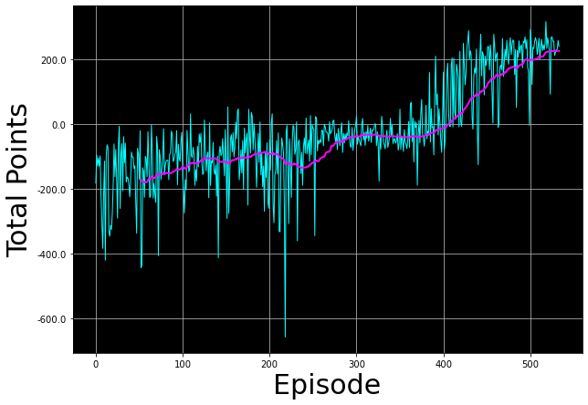

Lab: Deep Q-Learning, Lunar Lander
The previous page developed the DQN algorithm and its refinements, the target values from the Bellman equation, the ϵ-greedy policy, mini-batches, and soft updates. This lab, the practice lab that closes the course, puts all of it into practice. You train an agent to land a lunar lander safely on a landing pad on the surface of the moon.

The lab runs in the course’s Jupyter environment, which provides gym version 0.24.0 with the Box2D LunarLander-v2 environment, TensorFlow, and a virtual display for rendering. The code on this page is therefore shown rather than executed here, and every output, including the training log, the training plot, and the landing video, comes from an actual completed run of the notebook. To run it yourself you also need the helper file the code imports, utils.py, placed next to the notebook.
Import Packages
The lab makes use of the following packages.
numpyis a package for scientific computing in Python.dequewill be the data structure for the memory buffer. A deque (double-ended queue) works like a list with a fixed capacity that automatically discards its oldest entries as new ones arrive, which is exactly the behavior the replay buffer needs.namedtuplewill be used to store the experience tuples. A named tuple is a tuple whose positions carry names, so a stored experience can be read ase.stateore.rewardinstead of a bare index.- The
gymtoolkit is a collection of environments that can be used to test reinforcement learning algorithms. Note that this lab usesgymversion0.24.0. PIL.Imageandpyvirtualdisplayare needed to render the lunar lander environment.- Several modules from the
tensorflow.kerasframework are used for building deep learning models. utilsis a module that contains helper functions for this lab. You do not need to modify its code.
import time
from collections import deque, namedtuple
import gym
import numpy as np
import PIL.Image
import tensorflow as tf
import utils
from pyvirtualdisplay import Display
from tensorflow.keras import Sequential
from tensorflow.keras.layers import Dense, Input
from tensorflow.keras.losses import MSE
from tensorflow.keras.optimizers import AdamThe next cell sets up a virtual display for rendering and seeds the TensorFlow pseudo-random number generator, so that runs are reproducible.
# Set up a virtual display to render the Lunar Lander environment.
Display(visible=0, size=(840, 480)).start();
# Set the random seed for TensorFlow
tf.random.set_seed(utils.SEED)Hyperparameters
These four hyperparameters are used throughout the lab. The memory buffer size \(N\) is the capacity of the replay buffer, \(\gamma\) is the discount factor, \(\alpha\) is the learning rate, and the algorithm performs a learning update every \(C = 4\) time steps rather than on every single step.
MEMORY_SIZE = 100_000 # size of memory buffer
GAMMA = 0.995 # discount factor
ALPHA = 1e-3 # learning rate
NUM_STEPS_FOR_UPDATE = 4 # perform a learning update every C time stepsLunar Lander Environment
The lab uses OpenAI’s Gym library. The Gym library provides a wide variety of environments for reinforcement learning. Gym has since been handed over to the Farama Foundation, which maintains it today under the name Gymnasium, so the Gymnasium documentation is the current reference for these environments, including the lunar lander. To put it simply, an environment represents a problem or task to be solved, and here that task is the lunar lander.
The goal is to land the lunar lander safely on the landing pad on the surface of the moon. The landing pad is designated by two flag poles and its center is at coordinates \((0, 0)\), but the lander is also allowed to land outside of the landing pad. The lander starts at the top center of the environment with a random initial force applied to its center of mass, and has infinite fuel. The environment is considered solved when the agent gets \(200\) points.
Action Space
The agent has four discrete actions available, each with a corresponding numerical value.
Do nothing = 0
Fire right engine = 1
Fire main engine = 2
Fire left engine = 3Observation Space
The agent’s observation space consists of a state vector with 8 variables.
- Its \((x, y)\) coordinates. The landing pad is always at coordinates \((0, 0)\).
- Its linear velocities \((\dot{x}, \dot{y})\).
- Its angle \(\theta\).
- Its angular velocity \(\dot{\theta}\).
- Two booleans, \(l\) and \(r\), that represent whether each leg is in contact with the ground or not.
Rewards
After every step, a reward is granted. The total reward of an episode is the sum of the rewards for all the steps within that episode. For each step, the reward
- is increased or decreased the closer or further the lander is to the landing pad,
- is increased or decreased the slower or faster the lander is moving,
- is decreased the more the lander is tilted (angle not horizontal),
- is increased by 10 points for each leg that is in contact with the ground,
- is decreased by 0.03 points each frame a side engine is firing, and
- is decreased by 0.3 points each frame the main engine is firing.
The episode receives an additional reward of \(-100\) or \(+100\) points for crashing or landing safely, respectively.
Episode Termination
An episode ends, meaning the environment enters a terminal state, if the lunar lander crashes (the body of the lander comes in contact with the surface of the moon), or if the absolute value of the lander’s \(x\) coordinate becomes greater than 1 (it goes beyond the left or right border). The Gymnasium documentation has a full description of the environment.
Load the Environment
The .make() method loads the LunarLander-v2 environment, the latest version of the lunar lander environment.
env = gym.make('LunarLander-v2')Once the environment is loaded, the .reset() method resets it to the initial state. The lander starts at the top center of the environment, and the .render() method draws the first frame.
env.reset()
PIL.Image.fromarray(env.render(mode='rgb_array'))
To build the neural network later on, we need to know the size of the state vector and the number of valid actions. The environment provides this information through .observation_space.shape and .action_space.n.
state_size = env.observation_space.shape
num_actions = env.action_space.n
print('State Shape:', state_size)
print('Number of actions:', num_actions)State Shape: (8,)
Number of actions: 4Interacting with the Gym Environment
The Gym library implements the standard agent-environment loop formalism, shown in the clip below. An agent interacts with the environment in discrete time steps \(t = 0, 1, 2, \dots\). At each time step \(t\), the agent uses a policy \(\pi\) to select an action \(A_t\) based on its observation of the environment’s state \(S_t\). The agent receives a numerical reward \(R_t\) and, on the next time step, moves to a new state \(S_{t+1}\).
Exploring the Environment Dynamics
In Gym environments, the .step() method runs a single time step of the environment’s dynamics. In the version of gym used in this lab, .step() accepts an action and returns four values.
observation(object), an environment-specific object representing the observation of the environment. In the lunar lander this is a numpy array containing the positions and velocities described in the observation space section above.reward(float), the amount of reward returned as a result of taking the given action, anumpy.float64as described in the rewards section.done(boolean), which isTruewhen the episode has terminated and the environment needs to be reset.info(dictionary), diagnostic information useful for debugging, not used in this lab.
To begin an episode, reset the environment to an initial state with .reset().
# Reset the environment and get the initial state.
current_state = env.reset()Once the environment is reset, the agent can start taking actions by calling .step(), one action per time step. The cell below takes action 0 (do nothing) and displays the returned values. You can select different actions by their numerical value and see how the returned values change.
# Select an action
action = 0
# Run a single time step of the environment's dynamics with the given action.
next_state, reward, done, _ = env.step(action)
# Display table with values.
utils.display_table(current_state, action, next_state, reward, done)
# Replace the `current_state` with the state after the action is taken
current_state = next_stateThe run recorded on this page produced the following transition for the do-nothing action.
| \(x\) | \(y\) | \(\dot{x}\) | \(\dot{y}\) | \(\theta\) | \(\dot{\theta}\) | \(l\) | \(r\) | |
|---|---|---|---|---|---|---|---|---|
| Current state | 0.001919 | 1.422301 | 0.194400 | 0.505814 | \(-0.002217\) | \(-0.044034\) | False | False |
| Next state | 0.003839 | 1.433103 | 0.194137 | 0.480094 | \(-0.004393\) | \(-0.043519\) | False | False |
The step returned a reward of \(1.104326\) and done equal to False, so the episode continued. Even though the agent did nothing, the lander kept drifting upward slightly under its random initial force while gravity pulled the vertical velocity down, and both legs stayed off the ground. In practice, when the agent is trained, a loop lets it take many consecutive actions during an episode.
Deep Q-Learning
In cases where both the state and action space are discrete, the action-value function can be estimated iteratively by using the Bellman equation, \[Q_{i+1}(s, a) = R + \gamma \max_{a'} Q_i(s', a')\] This iterative method converges to the optimal action-value function \(Q^*(s, a)\) as \(i \to \infty\). The agent just needs to gradually explore the state-action space and keep updating the estimate of \(Q(s, a)\) until it converges. However, in cases where the state space is continuous, as with the lunar lander, it becomes practically impossible to explore the entire state-action space, which also makes it practically impossible to estimate \(Q(s, a)\) this way until it converges to \(Q^*(s, a)\).
In deep Q-learning, we solve this problem by using a neural network to estimate the action-value function, \(Q(s, a) \approx Q^*(s, a)\). This neural network is the Q-network, and it can be trained by adjusting its weights at each iteration to minimize the mean squared error in the Bellman equation.
Unfortunately, using neural networks in reinforcement learning to estimate action-value functions has proven to be highly unstable. Luckily, a couple of techniques can be employed to avoid instabilities, a target network and experience replay. The following sections explore both.
Target Network
The Q-network can be trained by adjusting its weights at each iteration to minimize the mean squared error in the Bellman equation, where the target values are \[y = R + \gamma \max_{a'} Q(s', a'; w)\] and \(w\) are the weights of the Q-network. The weights \(w\) are adjusted at each iteration to minimize the error \[\overbrace{\underbrace{R + \gamma \max_{a'} Q(s', a'; w)}_{y \text{ target}} - Q(s, a; w)}^{\text{Error}}\]
Notice the problem here. The \(y\) target is changing on every iteration, because it is computed with the very weights being adjusted. Having a constantly moving target can lead to oscillations and instabilities. To avoid this, we create a separate neural network for generating the \(y\) targets, called the target \(\hat{Q}\)-network, with the same architecture as the original Q-network. The error becomes \[\overbrace{\underbrace{R + \gamma \max_{a'} \hat{Q}(s', a'; w^-)}_{y \text{ target}} - Q(s, a; w)}^{\text{Error}}\] where \(w^-\) and \(w\) are the weights of the target \(\hat{Q}\)-network and Q-network, respectively.
In practice, every \(C\) time steps the target \(\hat{Q}\)-network generates the \(y\) targets, and its weights get updated from the Q-network weights using a soft update, \[w^- \leftarrow \tau w + (1 - \tau) w^-\] where \(\tau \ll 1\). The soft update ensures the target values \(y\) change slowly, which greatly improves the stability of the learning algorithm. In this lab, \(\tau\) is set to \(0.001\) in the utils module.
Exercise 1: Q-Network and Target Network
This exercise creates the Q-network and the target \(\hat{Q}\)-network and sets the optimizer. The deep Q-network maps states to Q values, using the architecture developed on the previous page.
- An
Inputlayer that takesstate_sizeas input. - A
Denselayer with64units and areluactivation function. - A
Denselayer with64units and areluactivation function. - A
Denselayer withnum_actionsunits and alinearactivation function. This is the output layer of the network.
Both networks get the same architecture, and the optimizer is Adam with a learning rate equal to ALPHA from the hyperparameters section.
# Create the Q-Network
q_network = Sequential([
Input(shape=state_size),
Dense(units=64, activation='relu'),
Dense(units=64, activation='relu'),
Dense(units=num_actions, activation='linear'),
])
# Create the target Q^-Network
target_q_network = Sequential([
Input(shape=state_size),
Dense(units=64, activation='relu'),
Dense(units=64, activation='relu'),
Dense(units=num_actions, activation='linear'),
])
optimizer = Adam(learning_rate=ALPHA)Two details in that code are easy to skim past. The two networks are written out separately rather than one being copied from the other, so they start as independent objects with independently initialized weights. They will not stay identical, and that is the whole point of holding a target network. Only the output layer is linear. A Q value is an expected return, an unbounded quantity that can be negative when the lander crashes, so squashing it with a relu or a sigmoid would make the larger part of the value range unreachable.
Experience Replay
When an agent interacts with the environment, the states, actions, and rewards it experiences are sequential by nature. If the agent tries to learn from these consecutive experiences, it can run into problems due to the strong correlations between them. To avoid this, we employ experience replay to generate uncorrelated experiences for training. Experience replay consists of storing the agent’s experiences (the states, actions, and rewards it receives) in a memory buffer, and then sampling a random mini-batch of experiences from the buffer to do the learning. The experience tuples \((S_t, A_t, R_t, S_{t+1})\) get added to the memory buffer at each time step as the agent interacts with the environment.
For convenience, experiences are stored as named tuples.
# Store experiences as named tuples
experience = namedtuple("Experience", field_names=["state", "action", "reward", "next_state", "done"])By using experience replay, we avoid problematic correlations, oscillations, and instabilities. In addition, experience replay also allows the agent to potentially use the same experience in multiple weight updates, which increases data efficiency.
Deep Q-Learning Algorithm with Experience Replay
Putting the target network and experience replay together produces the full algorithm.

Exercise 2: Computing the Loss
This exercise implements line 12 of the algorithm above and computes the loss between the \(y\) targets and the \(Q(s, a)\) values. The compute_loss function sets the \(y\) targets equal to \[
y_j =
\begin{cases}
R_j & \text{if episode terminates at step } j+1\\
R_j + \gamma \max\limits_{a'} \hat{Q}(s_{j+1}, a') & \text{otherwise}
\end{cases}
\]
A couple of things worth noting about the implementation.
- The
compute_lossfunction takes in a mini-batch of experience tuples, which is unpacked to extractstates,actions,rewards,next_states, anddone_vals. All of these are TensorFlow tensors whose size depends on the mini-batch size. For example, with a mini-batch size of64, bothrewardsanddone_valsare tensors with64elements. - Using
if/elsestatements to set the \(y\) targets will not work when the variables are tensors with many elements. However, thedone_valstensor implements the case split in a single line. A BooleanTruehas the numerical value1andFalsehas the value0, so the factor(1 - done_vals)equals0when an episode terminates at step \(j+1\) and1otherwise, which switches the future term on and off exactly as the cases require. - The two lines with
tf.gather_ndlook intimidating, but their job is simple. The network outputs four Q values for every state in the mini-batch, and these lines pick out, for each experience, the single Q value of the action that was actually taken, so that it can be compared against its target. - The loss is the mean squared error (
MSE) between they_targetsand theq_values.
def compute_loss(experiences, gamma, q_network, target_q_network):
"""
Calculates the loss.
Args:
experiences: (tuple) tuple of ["state", "action", "reward", "next_state", "done"] namedtuples
gamma: (float) The discount factor.
q_network: (tf.keras.Sequential) Keras model for predicting the q_values
target_q_network: (tf.keras.Sequential) Keras model for predicting the targets
Returns:
loss: (TensorFlow Tensor(shape=(0,), dtype=int32)) the Mean-Squared Error between
the y targets and the Q(s,a) values.
"""
# Unpack the mini-batch of experience tuples
states, actions, rewards, next_states, done_vals = experiences
# Compute max Q^(s,a)
max_qsa = tf.reduce_max(target_q_network(next_states), axis=-1)
# Set y = R if episode terminates, otherwise set y = R + γ max Q^(s,a).
y_targets = rewards + gamma * max_qsa * (1 - done_vals)
# Get the q_values and reshape to match y_targets
q_values = q_network(states)
q_values = tf.gather_nd(q_values, tf.stack([tf.range(q_values.shape[0]),
tf.cast(actions, tf.int32)], axis=1))
# Compute the loss
loss = MSE(y_targets, q_values)
return lossUpdate the Network Weights
The agent_learn function implements lines 12 to 14 of the algorithm, updating the weights of the Q and target \(\hat{Q}\) networks using a custom training loop. Because it is a custom training loop, rather than the usual model.fit() call from the earlier courses, the gradients are retrieved via a tf.GradientTape instance, and optimizer.apply_gradients() then updates the weights of the Q-network. A gradient tape records the calculations performed inside its block, which lets TensorFlow work out the gradients of the loss with respect to the weights, exactly the derivatives that gradient descent needs. The @tf.function decorator increases performance, and without it training takes twice as long. The last line updates the weights of the target \(\hat{Q}\)-network using the soft update from earlier, implemented in utils.update_target_network.
@tf.function
def agent_learn(experiences, gamma):
"""
Updates the weights of the Q networks.
Args:
experiences: (tuple) tuple of ["state", "action", "reward", "next_state", "done"] namedtuples
gamma: (float) The discount factor.
"""
# Calculate the loss
with tf.GradientTape() as tape:
loss = compute_loss(experiences, gamma, q_network, target_q_network)
# Get the gradients of the loss with respect to the weights.
gradients = tape.gradient(loss, q_network.trainable_variables)
# Update the weights of the q_network.
optimizer.apply_gradients(zip(gradients, q_network.trainable_variables))
# update the weights of target q_network
utils.update_target_network(q_network, target_q_network)Train the Agent
Everything is now in place to train the agent. The training cell implements the algorithm figure line by line.
- Line 1. Initialize the
memory_bufferwith a capacity of \(N =\)MEMORY_SIZE. Adequeserves as the data structure. - Line 2. Skipped, since the
q_networkwas already initialized in Exercise 1. - Line 3. Initialize the
target_q_networkby setting its weights equal to those of theq_network. - Line 4. Start the outer loop over \(M =\)
num_episodes = 2000episodes. This number is reasonable because the agent should be able to solve the environment in fewer than 2,000 episodes with this lab’s default parameters. - Line 5. Use
.reset()to get the initial state. - Line 6. Start the inner loop over \(T =\)
max_num_timesteps = 1000time steps, so an episode terminates automatically if it has not ended after 1,000 steps. - Line 7. The agent observes the current
stateand chooses anactionusing an ϵ-greedy policy. Training starts with \(\epsilon = 1\), equivalent to the equiprobable random policy (every one of the four actions is equally likely), so at the beginning the agent takes random actions regardless of the observed state. As training progresses, \(\epsilon\) decreases slowly toward a minimum value using the decay rateE_DECAY = 0.995, so the agent leans more and more toward the actions it believes will maximize \(Q(s, a)\). The minimum isE_MIN = 0.01rather than exactly zero, to always keep a little bit of exploration during training. The implementation is inutils.get_action. - Line 8. Use
.step()to take the action and receive therewardand thenext_state. - Line 9. Store the
experience(state, action, reward, next_state, done)tuple in thememory_buffer. Thedonevariable is stored too, so that the \(y\) targets in Exercise 2 know when an episode terminated. - Line 10. Check whether the conditions are met to perform a learning update, via
utils.check_update_conditions. The conditions are that \(C =\)NUM_STEPS_FOR_UPDATE = 4time steps have occurred, and that thememory_bufferholds enough tuples to fill a mini-batch of 64. - Lines 11 to 14. If an update is due, sample a random mini-batch of experience tuples from the buffer with
utils.get_experiences, then set the \(y\) targets, perform a gradient descent step, and update the network weights, all through theagent_learnfunction. - Line 15. Set
next_stateas the newstate, and break out of the inner loop if the episode has reached a terminal state. - Line 16. Update the value of \(\epsilon\) and check whether the environment is solved, defined as an average of 200 points over the last 100 episodes.
The cell also tracks the total points per episode, to determine when the environment is solved and to see how the agent improved during training, and times the whole run.
start = time.time()
num_episodes = 2000
max_num_timesteps = 1000
total_point_history = []
num_p_av = 100 # number of total points to use for averaging
epsilon = 1.0 # initial ε value for ε-greedy policy
# Create a memory buffer D with capacity N
memory_buffer = deque(maxlen=MEMORY_SIZE)
# Set the target network weights equal to the Q-Network weights
target_q_network.set_weights(q_network.get_weights())
for i in range(num_episodes):
# Reset the environment to the initial state and get the initial state
state = env.reset()
total_points = 0
for t in range(max_num_timesteps):
# From the current state S choose an action A using an ε-greedy policy
state_qn = np.expand_dims(state, axis=0) # state needs to be the right shape for the q_network
q_values = q_network(state_qn)
action = utils.get_action(q_values, epsilon)
# Take action A and receive reward R and the next state S'
next_state, reward, done, _ = env.step(action)
# Store experience tuple (S,A,R,S') in the memory buffer.
# We store the done variable as well for convenience.
memory_buffer.append(experience(state, action, reward, next_state, done))
# Only update the network every NUM_STEPS_FOR_UPDATE time steps.
update = utils.check_update_conditions(t, NUM_STEPS_FOR_UPDATE, memory_buffer)
if update:
# Sample random mini-batch of experience tuples (S,A,R,S') from D
experiences = utils.get_experiences(memory_buffer)
# Set the y targets, perform a gradient descent step,
# and update the network weights.
agent_learn(experiences, GAMMA)
state = next_state.copy()
total_points += reward
if done:
break
total_point_history.append(total_points)
av_latest_points = np.mean(total_point_history[-num_p_av:])
# Update the ε value
epsilon = utils.get_new_eps(epsilon)
print(f"\rEpisode {i+1} | Total point average of the last {num_p_av} episodes: {av_latest_points:.2f}", end="")
if (i+1) % num_p_av == 0:
print(f"\rEpisode {i+1} | Total point average of the last {num_p_av} episodes: {av_latest_points:.2f}")
# We will consider that the environment is solved if we get an
# average of 200 points in the last 100 episodes.
if av_latest_points >= 200.0:
print(f"\n\nEnvironment solved in {i+1} episodes!")
q_network.save('lunar_lander_model.h5')
break
tot_time = time.time() - start
print(f"\nTotal Runtime: {tot_time:.2f} s ({(tot_time/60):.2f} min)")With the default parameters, this cell takes between 10 and 15 minutes to run. The recorded run produced the following log.
Episode 100 | Total point average of the last 100 episodes: -150.85
Episode 200 | Total point average of the last 100 episodes: -106.11
Episode 300 | Total point average of the last 100 episodes: -77.256
Episode 400 | Total point average of the last 100 episodes: -25.01
Episode 500 | Total point average of the last 100 episodes: 159.91
Episode 534 | Total point average of the last 100 episodes: 201.37
Environment solved in 534 episodes!
Total Runtime: 753.70 s (12.56 min)Plotting the total point history along with the moving average shows how the agent improved during training. Early episodes score deeply negative totals, mostly crashes under the random policy, and the average climbs steadily as \(\epsilon\) decays and the Q-network improves, crossing the 200-point threshold at episode 534.
# Plot the total point history along with the moving average
utils.plot_history(total_point_history)
Trained Agent in Action
With the agent trained, the utils.create_video function creates a video of the agent interacting with the environment using the trained Q-network, and utils.embed_mp4 embeds it in the notebook. Suppressing the imageio warnings first keeps the output clean.
# Suppress warnings from imageio
import logging
logging.getLogger().setLevel(logging.ERROR)filename = "./videos/lunar_lander.mp4"
utils.create_video(filename, env, q_network)
utils.embed_mp4(filename)Since the lander starts with a random initial force applied to its center of mass, every run of this cell produces a different video. If the agent was trained properly, it should land the lunar lander in the landing pad every time, regardless of the initial force. Here is the landing from the recorded run.
You have successfully used deep Q-learning with experience replay to train an agent to land a lunar lander safely on a landing pad on the surface of the moon.
Review Questions
1. Why does training a Q-network directly on the Bellman targets become unstable, and how does the target network help?
The target \(y = R + \gamma \max_{a'} Q(s', a'; w)\) is computed with the same weights \(w\) being trained, so the target moves on every iteration, which can cause oscillations and instabilities. The target \(\hat{Q}\)-network is a separate copy whose weights \(w^-\) change only through the slow soft update \(w^- \leftarrow \tau w + (1 - \tau) w^-\) with \(\tau = 0.001\), so the targets change slowly and learning becomes much more stable.
1. What problem does experience replay solve, and what is the extra efficiency benefit?
Consecutive experiences are strongly correlated, and learning from them in order can cause problems. Storing experiences in a memory buffer and sampling a random mini-batch breaks those correlations. As a bonus, one experience can be reused in multiple weight updates, which increases data efficiency.
1. In compute_loss, why does the expression rewards + gamma * max_qsa * (1 - done_vals) implement the two-case definition of the targets?
The done_vals tensor holds 1 where the episode terminated at the next step and 0 where it did not. The factor (1 - done_vals) is therefore 0 at terminal transitions, reducing the target to \(R_j\) alone, and 1 otherwise, keeping the full \(R_j + \gamma \max_{a'} \hat{Q}(s_{j+1}, a')\). One vectorized line replaces an if/else that would not work on tensors with many elements.
1. How does the ϵ-greedy schedule in this lab move from exploration to exploitation?
Training starts with \(\epsilon = 1.0\), a completely random policy. After each episode, \(\epsilon\) is multiplied by the decay rate \(0.995\), shrinking it gradually toward the minimum of \(0.01\), where it stays. The agent therefore explores heavily at first and acts greedily 99 percent of the time by the end, while always keeping a little exploration.
1. When is the lunar lander environment considered solved, and when did the recorded run solve it?
The environment is considered solved when the agent averages 200 points over the last 100 episodes. The recorded run reached an average of 201.37 at episode 534, after about 12.5 minutes of training.
References
To learn more about deep Q-learning, these are the papers behind the techniques used in this lab.
- Lillicrap, T. P., Hunt, J. J., Pritzel, A., Heess, N., Erez, T., Tassa, Y., et al. (2015). Continuous control with deep reinforcement learning. arXiv. https://doi.org/10.48550/arXiv.1509.02971
- Mnih, V., Kavukcuoglu, K., Silver, D., Graves, A., Antonoglou, I., Wierstra, D., et al. (2013). Playing Atari with deep reinforcement learning. arXiv. https://doi.org/10.48550/arXiv.1312.5602
- Mnih, V., Kavukcuoglu, K., Silver, D., Rusu, A. A., Veness, J., Bellemare, M. G., et al. (2015). Human-level control through deep reinforcement learning. Nature, 518(7540), 529-533. https://doi.org/10.1038/nature14236